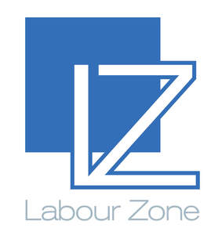

Trade Mark Journal No.2026/011 13 March 2026
UK00004345454 25 February 2026 (35)

- Class 35
- Business recruitment consultancy; Business marketing consultancy; Business organization consultancy; Business organization and operation consultancy; Business marketing services; Recruitment services for sales and marketing personnel; Business organisation; Consultancy regarding business organisation and business economics; Business strategy services; Business promotion; Business consultancy; Business organisation consulting; Business management organisation; Business strategy development services; Business management and organization consultancy; Employment recruitment; Business organisation consultancy; Business management and enterprise organization consultancy; Business promotion services; Employment recruiting consultancy; Recruitment services; Business administration consultancy; Business management and organisation consultancy; Business management organisation consultancy; Business organisation and management consultancy; Business management and organization consultancy services; Business organisation and management consulting; Business process management consultancy; Recruitment consultancy services; Business marketing consulting services; Recruitment advertising; Business planning and business continuity consulting; Business management and organisation consultancy services; Business organisation and management consulting services; Executive recruitment services; Business management and consultancy; Business management consultancy; Consultancy of personnel recruitment; Personnel recruitment consultancy; Personnel recruitment advertising; Professional recruitment services; Commercial business management; Business organization consulting; Business management; Business strategy and planning services; Advisory services relating to business management and business operations; Business consultancy to firms; Business marketing consultation services; Business management advice relating to manufacturing business; Business relocation consulting; Strategic business consultancy; Business planning consultancy; Business organization and management consulting; Consulting services in business organization and management; Recruitment consultants in the financial services field; Business consultancy services; Business advisory services relating to business liquidations; Business consulting; Business management services; Staff recruitment consultancy services; Consultancy relating to the organisation of promotional campaigns for business; Business management and consultancy services; Business management consultancy services; Business process management and consulting; Business consultancy to individuals; Consultancy (Professional business -); Professional business consultancy; Business consultancy (Professional -); Business planning services for enterprises; Promotion [advertising] of business; Outsourcing services in the field of business operations; Business process management; Business administrative services for the relocation of businesses; Business management for a trade company and for a service company; Business consulting for enterprises; Relocation services for business; Business relocation services; Business management consultancy in the field of corporate travel; Business management and consulting; Business management consulting; Business planning services; Business management services relating to the development of businesses; Recruitment consultancy for lawyers; Business administration services; Employment recruiting services; Business networking; Business appraisal consultancy; Business networking services; Consultancy relating to business management and organisation; Outsourcing services in the field of business analytics; Business management for shops; Business enquiry services; Professional business consultancy services; Assistance to commercial enterprises in the management of their business; Organisation of exhibitions for business or commerce; Business management and consulting services; Business management consulting services; Planning concerning business management, namely, searching for partners for amalgamations and business take-overs as well as for business establishments; Business consulting services; Consultancy relating to business advertising; Business management services for footballers; Business planning; Computerised business promotion; Consultancy and advisory services in the field of business strategy; Business brokerage services; Business project management services; Consultancy relating to business organisation; Recruitment consultancy for legal secretaries; Business management services relating to the acquisition of businesses; Business administration; Business management assistance for industrial or commercial companies; Recruitment and personnel management services; Commercial assistance in business management; Business research services; Business strategic planning services; Professional business consultation relating to the operation of businesses; Assistance in franchised commercial business management; Personnel recruitment services and employment agencies; Business organizational consultation; Interviewing services [for personnel recruitment]; Advice in the field of business management and marketing; Business organisation advice; Staff recruitment services; Acquisitions (Business -) consulting services; Business management consultancy in the field of executive and leadership development; Business organisation and management consultancy in the field of personnel management; Business secretarial services; Business management advisory services relating to commercial enterprises; Business intelligence services; Business management for freelance service providers; Business management consultation; Professional consultancy relating to business management; Business advertising services relating to franchising; Personnel recruitment agency services; Business management and consultation; Business consultancy services relating to manufacturing; Business services relating to the establishment of businesses.
24/7 Staffing Solutions Limited